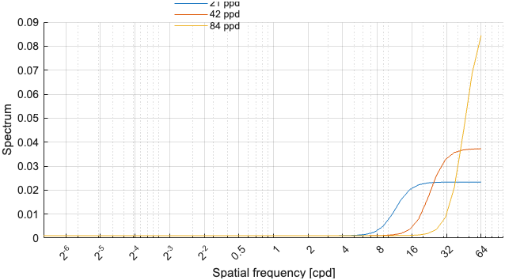
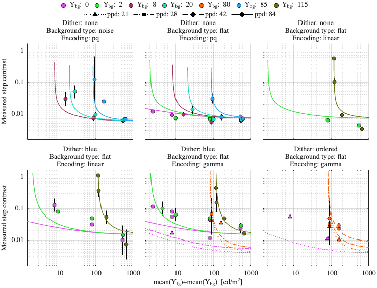
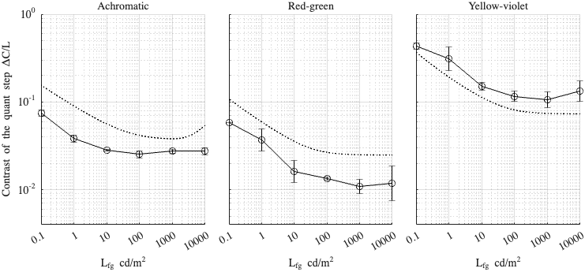

Fitting config: dither_spd, model: mutual_masking
Fitting error (RMSE): 0.308891
Model parameters
p.beta = 1.03635; p.gs_num = [ 0.469062 0.169026 0.999993 ]; p.noise_params = [ 0.00911549 0.64705 0.17908 ]; p.dither_amp_params = [ 2.73415 0.880695 ]; p.blue_dither_params = [ 0.547753 6.30794 0.00101313 0.225649 ];
Model components
Blue noise dither spectrum

Dataset: [ar2025]
Scaling factor: 0.631184

Dataset: [kim2020]
Scaling factor: 1.70425
